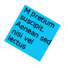
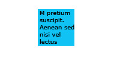
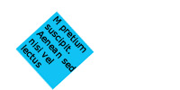
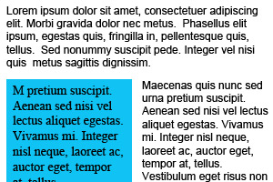
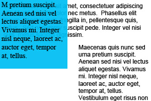
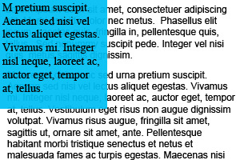
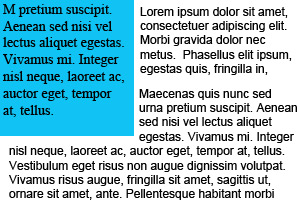

Thank you guys *very much* for soliciting this information, reading through it all, making sense of it in the context of your knowledge of CSS3, and working to incorporate it. I know I want to read the proposals but I want to do a lot of things. Also, thanks for the deadline. I never get anything done without a deadline :)
Stuff I think is in the specs I want:
Stuff other people have asked for that I second:
This is the stuff I want but don't know if it's in the specs:
A default class might be created to set up the basics of styling similar page elements. This base class is then applied to varous elements in the code. Deciding to change one of the multiple elements this class is applied to requires editing the HTML.
For example, horizontal navigation menus have lots of styling in common and code can be simplified by putting that styling in one class and applying it to all. However if one of the navigation menus has to be changed to be vertical instead of horisontal the HTML must be edited to remove the class:
.nav li{list-style-type:none; float:left;}
#global_nav{background-color:#00a;}
#section_nav{background-color:#a00;}
#tools_nav{background-color:#aaa;}
<div id="header">
<h1>Company Name</h1>
<ul id="global_nav" class="nav">
<li><a>link</a></li>
<li><a>link</a></li>
<li><a>link</a></li>
</ul>
</div>
<div id="content">
<ul id="section_nav" class="nav">
<li><a>link</a></li>
<li><a>link</a></li>
<li><a>link</a></li>
</ul>
<p>Content content content.</p>
<img alt="hey look an image" src="pic.jpg">
<p>Content content content.</p>
<div id="footer">
<ul id="tools_nav" class="nav">
<li><a>link</a></li>
<li><a>link</a></li>
<li><a>link</a></li>
</ul>
<div id="copyright">Don't worry, it's all free.</div>
</div>
Different page elements might receive similar treatments in one way but different ones in other ways. Current code requires that these definitions go together in one place and away from where their other properties are defined or to duplicate the code.
.sidebar{
float:left;
width:200px;
}
.sidebar p{
padding:10px;
border:1px solid #00a;
background-color:#fff;
color:#00a;
}
.entryblock{
padding:10px;
margin:10px;
}
.entryblock p{
line-height:2em;
border:1px solid #00a;
background-color:#fff;
color:#00a;
}
.broswebox{
font-size:0.8em;
padding:5px;
}
.broswebox p{
padding-left:100px;
border:1px solid #00a;
background-color:#fff;
color:#00a;
}
.keyword{
display:block;
padding:0.5em;
border:1px solid #00a;
background-color:#fff;
color:#00a;
}
Allow classes to be assigned to classes in the CSS. I imagine it would be best to add the class to the element giving it multiple classes instead of overwritting other classes.
.attention{
border:1px solid #00a;
background-color:#fff;
color:#00a;
}
.sidebar{
float:left;
width:200px;
}
.sidebar p{
padding:10px;
class:attention;
}
.entryblock{
padding:10px;
margin:10px;
}
.entryblock p{
line-height:2em;
class:attention;
}
.broswebox{
font-size:0.8em;
padding:5px;
}
.broswebox p{
padding-left:100px;
class:attention;
}
.keyword{
display:block;
padding:0.5em;
class:attention;
}
A colour scheme often exists of a small range of hex codes which get reused extensively throughout a document.
.contentimage{ border: 1px solid #00a;}
.sidebar{color:#fff; background-color:#00a;}
#content p:first-child {color:#00a;}
The same layout used across multiple pages might have different colour schemes, currently requiring all classes to be re-defined for the different colours
.products .contentimage { border: 1px solid #00a;}
.products .sidebar{color:#fff; background-color:#00a;}
.products #content p:first-child {color:#00a;}
.services .contentimage { border: 1px solid #a00;}
.services .sidebar{color:#fff; background-color:# a00;}
.services #content p:first-child {color:# a00;}
Code gets duplicated and can be hard to change or maintain.
Some method of pre-defining common values for attributes. Several people have suggested variables set up sort of like this:
body{$sectioncolour: #00a;}
.services {$sectioncolour: #a00;}
.contentimage { border: 1px solid $sectioncolour;}
.sidebar{color:#fff; background-color:$sectioncolour;}
.services .sidebar{color:#fff; background-color:$sectioncolour;}
#content p:first-child {color:$sectioncolour;}
If we also have the ability to assign classes in the CSS I would suggest that the contents of variables be limited to values instead of containing entire attribute value pairs ($sectioncolor: "color:#a00";).
Defining specific styles for multiple elements nested deep inside other elements can start to take up a lot of space
#content #maincontent .article .teaser p,
#content #maincontent .article .teaser ul,
#content #maincontent .article .teaser ol,
#content #maincontent .article .teaser div,
#content #maincontent .article .teaser .cool{
color:#00a;
}
Chaining elements or selectors:
#content #maincontent .article .teaser (p|ul|ol|div|.cool){
color:#00a;
}
Current image replacement techniques require moving the text off screen so it does not appear over top of the background image, with images off neither the text nor the background image appear on the screen.
#home a {
text-indent:-999px;
background-image: url(home.jpg);
display:block;
width:100px;
height:50px;
}
<div id="home"><a href="">Home</a></div><br>
Placing a transparent PNG over scrolling text to create a fade in effect. Example: figure 5-10, 5-11
Watermarks and translucent overlays
Foreground images, same as background images but in front of the text.
Placing a background image a fixed pixel distance from the bottom right corner of an element.
Wanting to access the box from a point other than the top left seems to be a common theme, the solution to this could be applied to other things like rotation and positioning too.
I think lots of other people have come up with solutions for this, do I really need to to?
I haven't read the all of the multiple image background specs yet but I would like to be sure that it is possible to insert a background image in between other background images defined elsewhere.
This is a serise of nested divs which have background images to create a flexable banner:
Can this be done with the new multiple background specs? I imagine it would look somthing like this:
.banner{
background-image: url(icons.gif), url(people.gif), url(bg.gif), url(end.gif), url(line.gif), url(lines.gif);
background-position: 0% 95%, 0px 30px, top left, 0% 100%, 0% 0%, 100% 0%;
background-repeat: repeat-x, no-repeat, repeat-x, no-repeat, no-repeat, repeat-x;
height:200px;
width:100%;
}
Now what if each section of the website has a different colour funcky background? Is there a straight forward way to change just that image?
How about a straight forward way to add in a second group of people in the middle there?
Using floats we are currently able to make a one colum list into a multi column list
But rather than stacking the list items top to bottom it stacks them left to right. It is still in logical order but not the one expected in English and it makes the list difficult to scan.
Lists could have a property which defined a width for the elements and allowed them to stack themselves if space permitted.
ul{
column-width:100px;
or
stack-width:100px;
}
.vegas li{
list-style-color:#000;
list-style-size:1.2em;
color:#f00;
}
.vegas li:nth-child(odd){
list-style-color: #f00;
color:#000;
}
.vegas li{
list-style-type:"♠"
}
.vegas li:nth-child(odd){
list-style-type:"♥"
}
Sometimes we want multiple borders around an element.
Multiple borders, following the multiple background image model:
#box{
border:2px 20px 10px 10px, solid, #fff, #000, #fff799,#aba000;
}
Or we could have the ability to define a second box around the element dynamically as suggested in comment 31.
#box:outer{border:20px solid #000;}
#box:outer:outer{border:10px solid #fff799;}
Elements with floated elements inside them need to have extra HTML code added that the end in order to completely contain the floated element. This might be a div with style="clear:both;" or it might be added dynamically using the .clearfix method.
What happens:
What we might want:
A new attribute to indicate that containers should clear their floats before they end.
#box{
overflow:contain;
or
clear:contents;
}
We want to be able to rotate boxes.
New properties could be created to designate a pivot point and a rotation in degrees (or radians but good luck getting designers to understand those).
#box{
pivot-point:top left;
rotation:45;
}

Pivot points could correspond to the top, left, right, bottom, and center of the box. This would also be useful for absolute and relative positioning. It would be nice if they took both text and unit values.
Image captions shouldn't push the container they share with the image wider
If I have a 200px wide image. I want my caption to wrap at 200px, but I don't want to have to hand code the image width on every container div on the site.
Current:
Desired appearance:
A property that could be set on the parent div to make it the minimum width possible:
.contentimage{
width:minimum;
or
text-wrap:force;
}
A propery that could be set on .caption which would prevent it from forcing the container larger:
.caption{
width:parent;
}
A well designed navigation menu will indicate to users the page that they are currently on so that they do not try to navigate to it again.
Currently this presentation requires javascript or server side logic.
A CSS method of styling links to the current page.
It would need to take into account the different options for index pages so that links to bcit.ca/index.shtml, bcit.ca, and / are treated the same. I would also think it would be a good idea to make it case sensative even though not all servers are case sensative.
a:current{
color:#666;
}
When taking a element out of the flow of a document by using position:absolute or position:relative there is no way to clear a space for it to be placed back into the flow.
To start:
Position:relative
Position:absolute
Text wrap around absolute and relative positioned elements:

text-flow:behind;
text-flow:inline;
text-flow:left;
text-flow:right;
text-flow:square;
Relativly positioned elements could have an option not to leave a space behind when they go. This effect can be achived currently by giving the element a negative margin equal to the distance it is being moved.
.box{
position:relative;
top:-20px;
left:-20px;
text-flow:tight;
}
Tool tips may clash with the design of a website.
Websites designed for low vision users have small tool tips with regular contrast text.
A pseudo class to allow styling of tool tips
img:tip{
background-color:#000;
color:#FFF;
font-size:2em;
}
abbr:tip{
background-color:#00A;
color:#FFF;
font-size:2em;
}